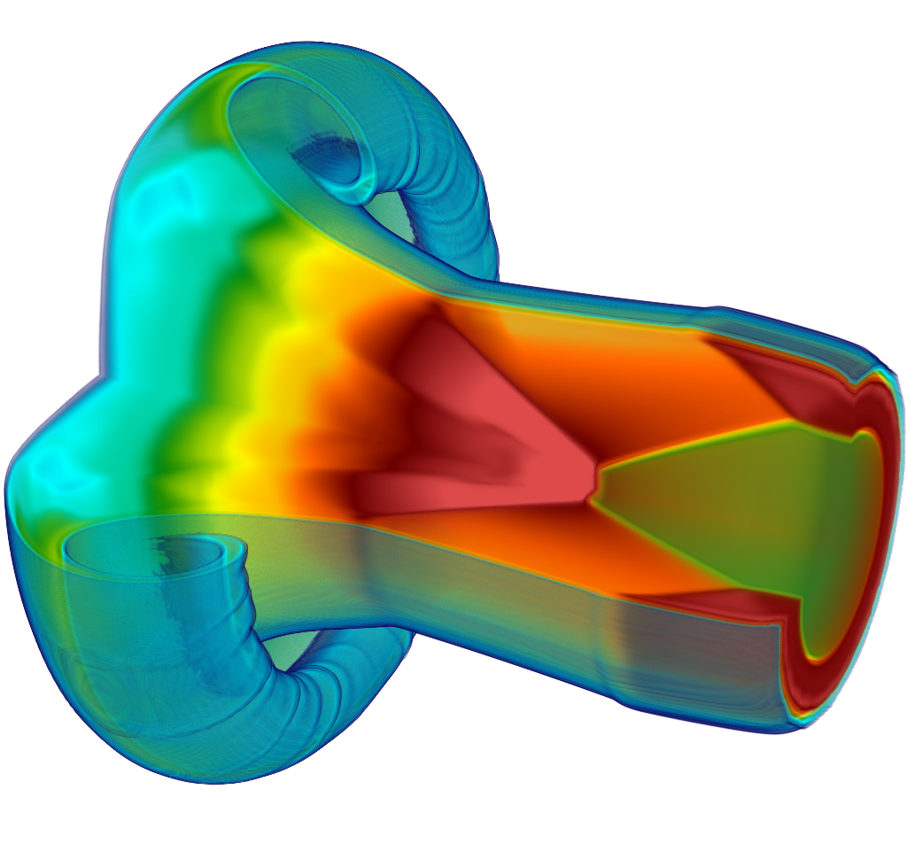
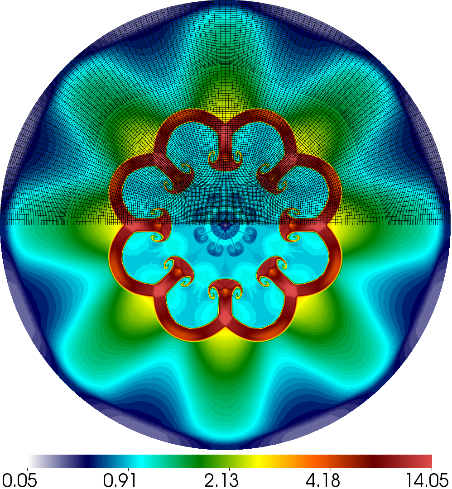
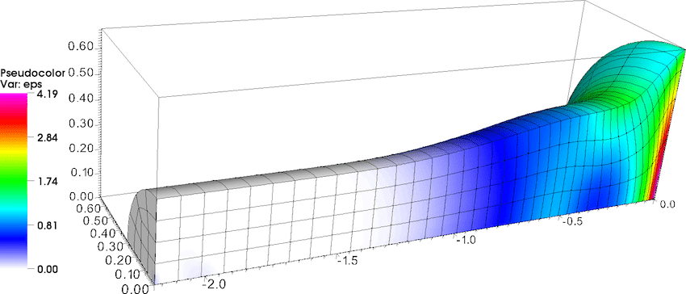

Gallery
This page collects screenshots from various simulations based on MFEM. Additional images can be found in the GLVis gallery.

A version of the MFEM logo demonstrating curvilinear elements, adaptive mesh refinement
and (idealized) parallel partitioning. Visualization with GLVis.

Parallel version of Example 1 on 100 processors with a relatively coarse version of square-disc.mesh.
Visualization with GLVis.

Level lines in a cutting plane of the solution from the parallel version of Example 1
on 64 processors with fichera.mesh. Visualization with GLVis.

Level surfaces in the interior of the solution from Example 1 on escher.mesh. Visualization with GLVis.

Streamlines of the magnetic field from a parallel computation of the magnetostatic
interaction of two magnetic orbs. Visualization with VTK.

3D Arbitrary Lagrangian-Eulerian (ALE) simulation of a shock-triple point interaction with Q2-Q1
elements
in the MFEM-based BLAST shock hydrodynamics code. Volume visualization with VisIt.

Planar inertial confinement fusion (ICF)-like implosion using mixed 4th finite elements in the MFEM-based BLAST shock hydrodynamics code. Visualization with VisIt.

Purely Lagrangian Rayleigh-Taylor instability simulation using 8th order mixed elements in the MFEM-based BLAST shock hydrodynamics code. Visualization with GLVis.

Modeling elastic-plastic flow in the 3D Taylor high-velocity impact problem using 4th order mixed elements in the MFEM-based BLAST shock hydrodynamics code. Visualization with VisIt.

Multi-mode Rayleigh-Taylor instability simulation using 4th order mixed elements in the MFEM-based BLAST shock hydrodynamics code. Visualization with VisIt.
{kind=link}
Test of the anisotropic refinement feature on a random mesh. A slightly modified version of Example 1. Visualization with GLVis.

Anisotropic refinement in a 2D shock-like AMR test problem. Visualization with GLVis.
{kind=link}
Anisotropic refinement in a 3D version of the AMR test. Portion of the spherical domain is cut away in GLVis.